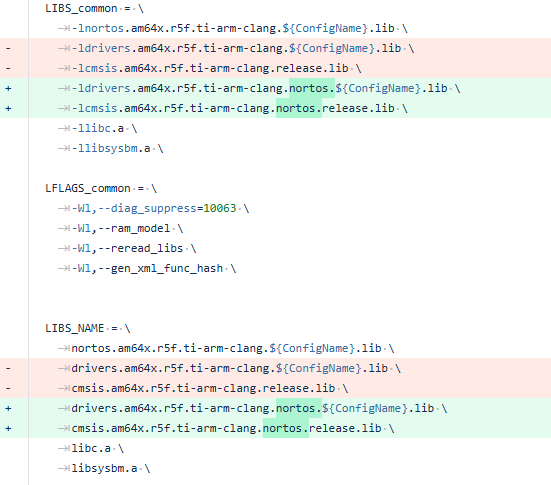
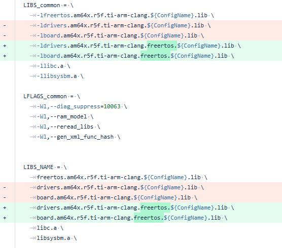
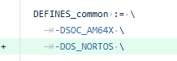

|
AM261x MCU+ SDK
11.01.00
|
|
|
AM261x MCU+ SDK
11.01.00
|
|
| Feature | Module |
|---|---|
| Clock Tree support for PLL and Peripheral clock configuration | Sysconfig |
| CCS Theia Support | CCS |
| Multi Core FreeRTOS IPC Example | IPC |
| OSPI Phy Graph Plotter Example | OSPI |
| Rev A Launchpad Support | Board |
| Rev A SOM Support | Board |
| Board Level Sysconfig Support | Sysconfig |
| USB Sysconfig support | Sysconfig |
| McSPI External Loopback Example | McSPI |
| USB NCM Class Support | USB |
| FreeRTOS based CDC Example | USB |
| LwIP stack upgrade to STABLE-2_2_1_RELEASE | Networking |
| IET Feature Enablement via Syscfg-GUI | Networking |
| XIP+RL2 support is included in Networking OOB example, referenced in EXAMPLES_ENET_LWIP_CPSW_UDPCLIENT | Networking |
| SENT Decoder and Encoder Examples | PRU-IO |
| SOC | Supported CPUs | EVM | Host PC |
|---|---|---|---|
| AM261x | R5F | AM261x Launchpad Rev A (referred to as am261x-lp in code). | Windows 10 64b or Ubuntu 18.04 64b or MacOS |
| AM261x | R5F | AM261x SOM Rev A (referred to as am261x-som in code). | Windows 10 64b or Ubuntu 18.04 64b or MacOS |
| Tools | Supported CPUs | Version |
|---|---|---|
| Code Composer Studio | R5F | 20.3.0 |
| SysConfig | R5F | 1.25.0 build, build 42688 |
| TI ARM CLANG | R5F | 4.0.3.LTS |
| FreeRTOS Kernel | R5F | 11.1.0 |
| LwIP | R5F | STABLE-2_2_1_RELEASE |
| Mbed-TLS | R5F | 2.13.1 |
| Uniflash | R5F | 9.3.0 |
| Feature | Module |
|---|---|
| Ethernet MDIO with Clause 45 support | Networking |
| OS | Supported CPUs | SysConfig Support | Key features tested | Key features not tested / NOT supported |
|---|---|---|---|---|
| FreeRTOS Kernel | R5F | NA | Task, Task notification, interrupts, semaphores, mutexs, timers | Task load measurement using FreeRTOS run time statistics APIs. Limited support for ROV features. |
| FreeRTOS POSIX | R5F | NA | pthread, mqueue, semaphore, clock | - |
| NO RTOS | R5F | NA | See Driver Porting Layer (DPL) below | - |
| Module | Supported CPUs | SysConfig Support | OS support | Key features tested | Key features not tested / NOT supported |
|---|---|---|---|---|---|
| Cache | R5F | YES | FreeRTOS, NORTOS | Cache write back, invalidate, enable/disable | - |
| Clock | R5F | YES | FreeRTOS, NORTOS | Tick timer at user specified resolution, timeouts and delays | - |
| CpuId | R5F | NA | FreeRTOS, NORTOS | Verify Core ID and Cluster ID that application is currently running on | - |
| CycleCounter | R5F | NA | FreeRTOS, NORTOS | Measure CPU cycles using CPU specific internal counters | - |
| Debug | R5F | YES | FreeRTOS, NORTOS | Logging and assert to any combo of: UART, CCS, shared memory | - |
| Heap | R5F | NA | FreeRTOS, NORTOS | Create arbitrary heaps in user defined memory segments | - |
| Hwi | R5F | YES | FreeRTOS, NORTOS | Interrupt register, enable/disable/restore, Interrupt prioritization | - |
| MPU | R5F | YES | FreeRTOS, NORTOS | Setup MPU and control access to address space | - |
| Semaphore | R5F | NA | FreeRTOS, NORTOS | Binary, Counting Semaphore, recursive mutexs with timeout | - |
| Task | R5F | NA | FreeRTOS | Create, delete tasks | - |
| Timer | R5F | YES | FreeRTOS, NORTOS | Configure arbitrary timers | - |
| Module | Supported CPUs | SysConfig Support | OS support | Key features tested | Key features not tested / NOT supported |
|---|---|---|---|---|---|
| Bootloader | R5FSS0-0 | YES | NORTOS | Boot modes: OSPI, UART. All R5F's. Multi-core ELF image format | Force Dual Core Mode |
| Peripheral | Supported CPUs | SysConfig Support | DMA Supported | Key features tested | Key features not tested / NOT supported |
|---|---|---|---|---|---|
| ADC | R5F | YES | Yes. Examples: adc_soc_continuous_dma, adc_alternate_dma_trigger | Single software triggered conversion, Multiple ADC trigger using PWM, Result read using DMA (normal and alternate triggers), EPWM trip through PPB limit, PPB features, Burst mode, Single and Differential mode, Interrupt with Offset from Aquisition Window, EPWM/ECAP/RTI triggered conversions, Trigger Repeater for Undersampling and Oversampling, Global Force on Multiple ADCs, Internal DAC Loopback to Calibration Channels, Safety Checker and Aggregator, Open Short Detection feature | External channel selection |
| Bootloader | R5F | YES | Yes. DMA enabled for SBL OSPI | Boot modes: OSPI, UART. All R5F's | - |
| CMPSS | R5F | YES | NA | Asynchronous PWM trip, digital filter, Calibration | CMPSS Dac LoopBack feature |
| CPSW | R5F | YES | No | MAC & PHY loopback(DP83826-EVM-AM2) with RMII and MII 100Mbps , MAC & PHY loopback(DP83TG720-EVM-AM2) with RGMII 1Gbps, LWIP (DP83TG720-EVM-AM2, DP83826-EVM-AM2): Getting IP, Ping, Layer 2 MAC, Layer 2 PTP Timestamping and Ethernet CPSW Switch support, TSN stack | - |
| DAC | R5F | YES | Yes. Example: dac_sine_dma | Constant voltage, Square wave generation, Sine wave generation with and without DMA, Ramp wave generation, Random Voltage generation | - |
| ECAP | R5F | YES | yes. Example : ecap_edma | ECAP APWM mode, PWM capture, DMA trigger in both APWM and Capture Modes, Signal Monitoring features | - |
| EDMA | R5F | YES | NA | DMA transfer using interrupt and polling mode, QDMA Transfer, Channel Chaining, PaRAM Linking, Error Handling | - |
| EPWM | R5F | YES | Yes. Example: epwm_dma, epwm_xcmp_dma | Multiple EPWM Sync from Top Module, PWM outputs A and B in up-down count mode, Trip zone, Update PWM using EDMA, Valley switching, High resolution time period adjustment, chopper module features, type5 features, global load and link feature | - |
| EQEP | R5F | YES | NA | Speed and Position measurement. Frequency Measurement, speed direction, cw-ccw modes | - |
| FSI | R5F | YES | YES | RX, TX, polling, interrupt, DMA mode, single lane loopback. | - FSI Spi Mode |
| GPIO | R5F | YES | NA | Output, Input and Interrupt functionality | - |
| I2C | R5F | YES | No | Controller mode, basic read/write | - |
| IPC Notify | R5F | YES | NA | Mailbox functionality, IPC between RTOS/NORTOS CPUs | M4F core |
| IPC Rpmsg | R5F | YES | NA | RPMessage protocol based IPC | M4F core |
| LIN | R5F | YES | YES | RX, TX, polling, interrupt, DMA mode. | - |
| MCAN | R5F | YES | No | RX, TX, interrupt and polling mode, Corrupt Message Transmission Prevention, Error Passive state, Bus Off State, Bus Monitoring Mode | - |
| MCSPI | R5F | YES | Yes. Example: mcspi_loopback_dma | Controller/Peripheral mode, basic read/write, polling, interrupt and DMA mode | - |
| MDIO | R5F | YES | NA | Register read/write, link status and link interrupt enable API | - |
| PINMUX | R5F | YES | NA | Tested with multiple peripheral pinmuxes | - |
| PMU | R5F | NO | NA | Tested various PMU events | Counter overflow detection is not enabled |
| OptiFlash | R5F | Yes | NA | FLC, RL2, RAT functionality, XIP with RL2 enabled, OTFA, FOTA, Optishare, Smart Layout | - |
| OSPI | R5F | YES | Yes. Example: ospi_flash_dma | Read direct, Write indirect, Read/Write commands, DMA for read | - |
| RTI | R5F | YES | No | Counter read, timebase selection, comparator setup for Interrupt, DMA requests | Capture feature, fast enabling/disabling of events not tested |
| SDFM | R5F | YES | No | ECAP Clock LoopBack, Filter data read from CPU, Filter data read with PWM sync, triggered DMA read from the Filter FIFO | - |
| SOC | R5F | YES | NA | Lock/unlock MMRs, clock enable, set Hz, Xbar configuration, SW Warm Reset, Address Translation | - |
| SPINLOCK | R5F | NA | NA | Lock, unlock HW spinlock | - |
| UART | R5F | YES | Yes. Example: uart_echo_dma | Basic read/write at baud rate 115200, polling, interrupt mode | HW flow control not tested, DMA mode not supported |
| USB | R5F | No | NA | DFU, CDC Echo mode | - |
| WATCHDOG | R5F | YES | NA | Reset mode, Interrupt mode | - |
| Peripheral | Supported CPUs | SysConfig Support | DMA Supported | Key features tested | Key features not tested / NOT supported |
|---|---|---|---|---|---|
| TMU | R5F | NO | NA | TMU Operations, Pipelining, Contex Save | Square Root, Division Operations. more than 1 Interrupt Nesting for the contex save is not Supported. |
| Peripheral | Supported CPUs | SysConfig Support | Key features tested | Key features not tested |
|---|---|---|---|---|
| EEPROM | R5F | YES | Only compiled | - |
| FLASH | R5F | YES | OSPI Flash | - |
| LED | R5F | YES | GPIO | - |
| ETHPHY | R5F | YES | Tested with ethercat_slave_beckhoff_ssc_demo example | - |
| IOEXPANDER | R5F | YES | IO configurability | - |
| PMIC | R5F | YES | Watchdog Reset and disable | - |
| Module | Supported CPUs | SysConfig Support | OS Support | Key features tested | Key features not tested |
|---|---|---|---|---|---|
| Time-Sensitive Networking(gPTP-IEEE 802.1AS) | R5F | NO | FreeRTOS | gPTP IEEE 802.1 AS-2020 compliant gPTP stack, End Nodes and Bridge mode support, YANG data model configuration | Multi-Clock Domain |
| LwIP | R5F | YES | FreeRTOS | TCP/UDP IP networking stack with and without checksum offload enabled, TCP/UDP IP networking stack with server and client functionality, basic Socket APIs, netconn APIs and raw APIs, DHCP, ping, scatter-gather | Other LwIP features |
| Ethernet driver (ENET) | R5F | YES | FreeRTOS | Ethernet as port using CPSW, MAC & PHY loopback, Layer 2 MAC, Packet Timestamping, CPSW Switch, CPSW EST, interrupt pacing, Policer and Classifier | MII mode |
| ICSS-EMAC | R5F | YES | FreeRTOS | Switch and MAC features, Storm Prevention (MAC), Host Statistics, Multicast Filtering | Promiscuous Mode |
| Module | Supported CPUs | SysConfig Support | OS support | Key features tested | Key features not tested / NOT supported |
|---|---|---|---|---|---|
| MCRC | R5F | NA | NORTOS | Full CPU, Auto CPU Mode and Semi CPU Auto Mode | - |
| DCC | R5F | NA | NORTOS | Single Shot and Continuous modes | - |
| PBIST | R5F | NA | NORTOS | Memories supported by MSS PBIST controller. | - |
| ESM | R5F | NA | NORTOS | Tested in combination with RTI, DCC | - |
| RTI | R5F | NA | NORTOS | WINDOWSIZE_100_PERCENT, WINDOWSIZE_50_PERCENT ,Latency/Propagation timing error(early)(50% window),Latency/Propagation timing error(late)(50% window) | - |
| ECC | R5F | NA | NORTOS | ECC of MSS_L2, R5F TCM, MCAN, VIM, ICSSM, TPTC | FSS FOTA and OSPI |
| ECC Bus Safety | R5F | NA | NORTOS | AHB, AXI, TPTC | - |
| CCM | R5F | NA | NORTOS | CCM Self Test Mode,Error Forcing Mode and Self Test Error Forcing Mode. TMU and RL2 are also validated | - |
| R5F STC(LBIST), Static Register Read | R5F | NA | NORTOS | STC of R5F, R5F CPU Static Register Read | - |
| TMU ROM Checksum | R5F | NA | NORTOS | ROM checksum for TMU | - |
| Time out Gasket(STOG) | R5F | NA | NORTOS | Timeout gasket feature | - |
| Thermal Monitor(VTM) | R5F | NA | NORTOS | Over, under and thershold temperature interrupts | - |
| Integrated Example | R5F | NA | FreeRTOS | Integrated example with all the SDL modules integrated in to one example. | ECC for TPTC, ECC Bus Safety and STC. |
Note: SDL is validated only on SOM Board.
| ID | Head Line | Module | Applicable Releases | Applicable Devices | Resolution/Comments |
|---|---|---|---|---|---|
| MCUSDK-14055 | SBL DFU and SBL DFU Uniflash Example failure | USB | 10.00.01 onwards | AM261x | Resolved in driver |
| MCUSDK-14502 | PMIC WDG QA Example not working on AM261x-LP E2 board | PMIC | 10.02.00 onwards | AM261x | Fixed in driver by increasing sleep time for waiting to trigger wdg reset |
| MCUSDK-14547 | XIP Flashing not supported in SBL JTAG Uniflash example | SBL | 10.00.00 onwards | AM263Px, AM261x | Added XIP flashing support in the example |
| MCUSDK-14609 | FOTA Example Failure on AM261x SOM | OptiFlash | 10.02.00 onwards | AM261x | Resolved by reducing OSPI clock frequency from 166Mhz to 133Mhz |
| MCUSDK-14606 | USB Enumeration fails randomly | USB | 10.02.00 onwards | AM261x | - |
| MCUSDK-14704 | Adding multiple instances of UART DMA LLD causes failure | UART | 10.02.00 onwards | AM263x, AM263Px, AM261x | Fixed array indexing while assigning dma config |
| MCUSDK-14917 | "Selected mode" in pinmux.csv.xdt file not being updated correctly in SysCfg | Pinmux | 10.01.00 onwards | AM263x, AM263Px, AM261x | Fixed in Pinmux CSV template |
| PROC_SDL-9179 | Redefinition error in MCU_PBIST Sysconfig | SDL | 10.02.00 onwards | AM263Px, AM261x | Resolved in Source code |
| MCUSDK-14749 | McSPI: Non Powers of 2 cannot be configured as fifo trigger levels in polling and interrupt mode | McSPI | 10.02.00 onwards | AM263x, AM263Px, AM261x | Fix in SysCfg Meta file. |
| MCUSDK-13966 | All UART triggers levels not exposed in SysCfg | UART | 10.00.00 onwards | AM263x, AM263Px, AM261x | Update SysCfg to show all trigger levels from 1 to 64. |
| MCUSDK-14573 | Incorrect handling of errata i2310 in UART isr | UART | 10.00.00 onwards | AM263x, AM263Px, AM261x | Reorder the ISR state machine for handling UART errata correctly. |
| MCUSDK-14706 | GPIO Qual selection API missing | GPIO | 10.00.00 onwards | AM263x, AM263Px, AM261x | Qual sel API added in pinmux driver |
| MCUSDK-14569 | UART Errata i2310 is missing a step | UART | 10.00.00 onwards | AM263x, AM263Px, AM261x | Added IIR register read to clear the interrupt |
| MCUSDK-14620 | SDK build fails in Mac Machines | Build | 10.02.00 onwards | AM263x, AM263Px, AM261x | Added GMAC library for MAC into SDK |
| MCUSDK-14659 | Incorrect RTI clock source mux address for RTI 4 to 7 | RTI | 10.00.00 onwards | AM263Px, AM261x | Updated to correct mux addresses in SysCfg |
| MCUSDK-13182 | SysCfg unexpectedly changes OSPI Pin | OSPI | 10.00.00 onwards | AM263Px, AM261x | The OSPI pins are locked in SDK examples. |
| MCUSDK-14857, MCUSDK-14731 | Core 1 unhalted in SBL before FSM Trigger, Memory load | SBL | 10.00.00 onwards | AM263x, AM263Px, AM261x | Skip unhalting core 1 of both clusters in dual core mode |
| MCUSDK-14712 | OSPI Reset Pin being used before configuration | OSPI | 10.00.00 onwards | AM263Px, AM261x | Configure OSPI reset in OSPI open instead of Flash open |
| PROC_SDL-9160 | PBIST does not cover the VIM memories | SDL | 10.02.00 onwards | AM263x, AM263Px, AM261x | Fixed in Source and Used polling method instead of ISR to cover VIM memory |
| PROC_SDL-9154 | VTM Example stuck in UC2 | SDL | 10.02.00 onwards | AM263Px, AM261x | Fixed in example |
| MCUSDK-14695 | SDFM_configComparator has incorrect input in examples | SDFM | 10.00.00 onwards | AM263x, AM263Px, AM261x | Updated example to pass correct value |
| MCUSDK-14696 | ADC Sysconfig does not seem to generate codes for repeaters | ADC | 10.00.00 onwards | AM263Px, AM261x | Fixed syscfg template file to generate trigger repeater code for burst mode |
| MCUSDK-14645 | Implementation of the ADC_selectSOCExtChannel | ADC | 10.01.00 onwards | AM263Px, AM261x | Fixed ADC_selectSOCExtChannel API implementation |
| PROC_SDL-9147 | VTM Usecase stuck in integrated example | SDL | 10.02.00 onwards | AM263Px, AM261x | Fixed in integrated example |
| ID | Head Line | Module | Reported in release | Workaround |
|---|---|---|---|---|
| MCUSDK-14148 | AM261x : ZNC : Package in the early samples has ADC issue. Needs SW checks undone for ADC | ADC | 10.00.00 onwards | Details : ZNC package currently (Jan 2025), has, ADC 0 Reference lines not connected with that of the ADC 1's. There are some packages were shipped with the ADC Reference Monitor checks are Bypassed for the ADC front end enablement in the EFUSE. the SW code gen from the syscfg will assert the ADC init if the monitor throws a fault. It is requested to bypass the SW check as well to enable the customer to use the ADC. Workaround : only applicable in the devices with forementioned conditions. 1. Go to the file source/sysconfig/drivers/.meta/soc_ctrl/templates/soc_ctrl_adc_config.c.xdt
2. Find line with DebugP_assert(SOC_getAdcReferenceStatus(`montior2AdcMap[monitor][0]`) == true);
3.Change it to //DebugP_assert(SOC_getAdcReferenceStatus(`montior2AdcMap[monitor][0]`) == true);
|
| MCUSDK-13865 | HRPWM Deadband sfo example has 1ns jitter | EPWM | 10.00.00 onwards | - |
| MCUSDK-13847 | AM261x: GPTP lwIP debug example doesnt fit in RAM | Networking | 10.00.01 onwards | - |
| MCUSDK-13513 | AM263Px, AM261x: UDP IPERF TX is unstable with 100Mbps link speed | Networking | 10.00.01 onwards | - |
| MCUSDK-14950 | AM26x: Networking examples show up as "..." on TIREX | Networking | 10.01.00 onwards | - |
| MCUSDK-14692 | Raw HTTP Server example does not work with Static IP | Networking | 10.02.00 onwards | - |
| MCUSDK-14792 | AM261x LwIP ping app does not work (enet_lwip_cpsw) | Networking | 10.02.00 onwards | - |
| MCUSDK-13896 | Syscfg does not let you configure ethernet interfaces pinmux independently | Networking | 10.02.00 onwards | - |
| MCUSDK-15051 | ENET: am261x: UDP client example not working in CCS boot mode | Networking | 11.00.00 onwards | - |
| PINDSW-7715 | Dual EMAC instance not working with both ports together for icss_emac_lwip example | ICSS-EMAC | 10.00.01 onwards | None |
| PINDSW-7746 | Low iperf values in TCP and UDP | ICSS-EMAC | 10.00.01 onwards | None |
| PINDSW-8118 | Enabling DHCP mode in icss_emac_lwip example causes assert | ICSS-EMAC | 10.00.01 onwards | None |
| MCUSDK-13201 | HRPWM waveform not generating (in updwon count) when prescaler is non-zero and HRPE is enabled | EPWM | 10.00.01 onwards | None |
| MCUSDK-13834 | EQEP: EQEP frequency measurement example is not working as expected | EQEP | 10.00.01 onwards | None |
| MCUSDK-14059 | CMPSS DE example has Glitch in PWM output | CMPSS | 10.00.01 onwards | None |
| PROC_SDL-8392 | In ECC bus safety example, ECC error is not properly cleared at the source. | SDL | 10.02.00 onwards | None |
| PROC_SDL-8787 | ECC TPTC and STC examples are not supported in SDL integrated example. | SDL | 10.02.00 onwards | Use standalone examples. |
| PROC_SDL-8857 | SDL integrated example does not support ECC Bus Safety. | SDL | 10.02.00 onwards | Use standalone example. |
| PROC_SDL-9163 | ECC Aggregators FSS FOTA and OSPI | SDL | 10.02.00 onwards | None |
| MCUSDK-14898 | SDL apps fails on other than RFSS0-0 with SBL | SBL, SDL | 11.00.00 onwards | This because SBL brings the RFSS0-1 out of reset before the SBL UART prints gets flushed. This will be fixed in next release. As a workaround the application in R5FSS1-0 can delay the start of application till SBL UART prints gets completed. |
| MCUSDK-13513 | Multiple chip selects cannot be configured in SysCfg | OSPI | 10.00.00 onwards | - |
| MCUSDK-14582 | Flash: Incorrect flash name after Loading Flash JSON | OSPI | 10.00.00 onwards | - |
| MCUSDK-14613 | XIP image loading not working in CCS for am261x-lp E2 board | CCS, XIP | 10.02.00 onwards | - |
| MCUSDK-14714 | Bufnum of 6 and 12 will cause the vring indexes to get corrupted | IPC | 10.00.00 onwards | Use other VRING buffer numbers. |
| MCUSDK-14879 | Potential system hang issue due to priority mask based critical sections. | FreeRTOS | 10.00.00 onwards | Not to use Priority mask based critical sections (Disabled by default in SDK). |
| MCUSDK-14893 | Sub projects under system projects cannot be changed in CCS Theia | CCS | 11.00.00 onwards | - |
| MCUSDK-14819 | Ram is getting erased/overwritten once warm reset is done in application | SBL | 11.00.00 onwards | - |
| MCUSDK-14895 | UART LLD Rx error checking logic checks if all errors exist at once | UART | 10.00.00 onwards | - |
| MCUSDK-14613 | XIP image loading not working in CCS for am261x-lp E2 board | CCS, XIP | 10.02.00 onwards | - |
| MCUSDK-14647 | All CANFD standard ID configurations are not exposed in syscfg gui | CAN | 10.02.00 onwards | Configure Config type, ID's etc in application |
| MCUSDK-14705 | Flash verify not working for XIP images | Flash | 10.02.00 onwards | - |
| MCUSDK-14914 | Unable to add UART communication port to target configuration in Theia | Real Time Debug | 10.02.00 onwards | Use the CCXML file from CCS eclipse after updating to correct COM port. |
| MCUSDK-14941 | McSPI: Non Multiple's of FIFO cannot be transferred in DMA mode | McSPI | 10.00.00 onwards | Use FIFO Trigger level of 1. |
| MCUSDK-13011 | Data Abort in application when all cores are running freertos using Gel files(CCS) | FreeRTOS | 10.00.00 onwards | Flash and use SBL NULL instead of gel files |
| MCUSDK-14636 | AM261x: Phy Tuning not supported for NAND Flash and PSRAM | OSPI, Flash | 10.02.00 onwards | - |
| MCUSDK-14656 | Mac OS Support not available for DFU Utils tool | USB | 10.02.00 onwards | - |
| PINDSW-9499 | Short serial message and enhanced serial message not working in SENT decoder using IEP ECAP example | PRU-IO | 11.00.00 onwards | - |
| ID | Head Line | Module | SDK Status |
|---|---|---|---|
| i2189 | OSPI: Controller PHY Tuning Algorithm | OSPI | Implemented |
| i2311 | USART: Spurious DMA Interrupts | UART | Implemented |
| i2324 | No synchronizer present between GCM and GCD status signals | Common | Implemented |
| i2345 | CPSW: Ethernet Packet corruption occurs if CPDMA fetches a packet which spans across memory banks | CPSW | Implemented |
| i2351 | OSPI: Controller does not support Continuous Read mode with NAND Flash | OSPI | Implemented |
| i2354 | SDFM: Two Back-to-Back Writes to SDCPARMx Register Bit Fields CEVT1SEL, CEVT2SEL, and HZEN Within Three SD-Modulator Clock Cycles can Corrupt SDFM State Machine, Resulting in Spurious Comparator Events | SDFM | Open |
| i2356 | ADC: Interrupts may Stop if INTxCONT (Continue-to-Interrupt Mode) is not Set | ADC | Implemented |
| i2375 | SDFM: SDFM module event flags (SDIFLG.FLTx_FLG_CEVTx) do not get set again if the comparator event is still active and digital filter path (using SDCOMPxCTL.CEVTxDIGFILTSEL) is being selected | SDFM | Open |
| i2383 | OSPI: 2-byte address is not supported in PHY DDR mode | OSPI | Implemented |
| i2479 | OSPI Boot Issue with GPIO61 Reset Pin Configuration | OSPI | Open |
| i2480 | 1µs Glitch on GPIO61/OSPI0_RESET_OUT0 during OSPI Boot | GPIO | Open |
| i2404 | Race condition in mailbox registers resulting in events miss | IPC, Mailbox | Implemented |
| ID | Head Line | Module | Reported in release | Workaround |
|---|---|---|---|---|
| - | DP83TG720-EVM-AM2 and DP83826-EVM-AM2 dont work simultaneously for switching traffic in AM261-LP Rev E1 and E2 boards | Networking | 10.00.00 onwards | - |
| MCUSDK-13630 | Cache should not be enabled at last 32B L2 Bank boundary | Cache | 10.01.00 | Create MPU configurations for last 32B of each L2 Bank with Non Cached attribute |
| - | LP-AM261 Out-of-box CPSW networking examples supports Rev-A board version seamlessly with DP83869 PHY. | Networking | 11.00.00 onwards | To use LP-AM261 Rev-E1,Rev-E2 boards, follow the steps mentioned in Software modification needeed to use Rev-E1 and Rev-E2 version of LP-AM261 EVM. |
| Component | Change | Comments |
|---|---|---|
| ADC / CMPSS | ADC / CMPSS pin positions have changed in LP Rev A | ADC0 Channels 0,4,6 have changed their pin positions from pins 23,26,29 in Rev E2 to 26,29,23 in Rev A respectively. Updated Example documentations ADC Burst Mode EPWM ADC SOC software ADC Software Interleaved Averaging |
| SDFM | SDFM Pin Positions have Changed in LP Rev A | SDFM1 Clk0, D0 and D3 have changed their default positions from 18,12,43 in Rev E2 to 6,3,10 in Rev A respectively. Please follow the Pinmux configurations accordingly. Updated Example sysconfig and documentation for SDFM ECAP Loop Back Example . |
| IO Expander | IO Expander Pins have changed in LP Rev A | IO Expander at 0x21H has updated pins P0,P3,P4,P5 from CPSW/ICSS_BRD_CONN_DET1, MDIO/MDC_MUX_SEL1, MDIO/MDC_MUX_SEL2, CPSW/ICSS_BRD_CONN_DET2 in E2 to BP_MUX_SW_S6, BP_MUX_SW_S4, MDIO/MDC_MUX_SEL, BP_MUX_SW_S5 in REV A . |
| GPIO | GPIO Interrupt Pin has changed in LP and SOM Rev A | For Launchpad, the GPIO interrupt pin has changed from GPIO124 to GPIO5 in REV A. GPIO INT Crossbar has changed from GPIO_INT_XBAR_GPIO_0_BANK_INTR_7 to GPIO_INT_XBAR_GPIO_0_BANK_INTR_0 in REV A. For SOM, the GPIO interrupt pin has changed from GPIO128 to GPIO120 in REV A. GPIO INT Crossbar has changed from GPIO_INT_XBAR_GPIO_0_BANK_INTR_8 to GPIO_INT_XBAR_GPIO_0_BANK_INTR_7 in REV A. |
| PMIC | Resolved PMIC watchdog reset issue on LP Rev A | With the hardware fix for the PMIC watchdog reset issue in LP Rev A, the software workaround has been removed from all SBLs. For LP Rev E2 boards, the workaround is still required. Ensure the PMIC module is enabled in the SBL sysconfig. |
| Component | Change | Comments |
|---|---|---|
| Clocktree | Switching between 500 MHz and 400 MHz in ZFG package has changed. | There are two variants available, catering to different R5F clock frequencies: 400 MHz and 500 MHz. The default variant is 500 MHz, but users can switch to the 400 MHz variant. This switching was earlier done through clock module in sysconfig but now it's done through Device View settings (Switching between 500 MHz and 400 MHz in ZFG package) |
Currently the gmac library packaged within SDK is compiled using gcc darwin23.6.0 on Apple MAC. To build SDK examples on a different toolchain, recompile the gmac library by using these steps:
RPRC image format is no longer supported and MCELF will be the only file format. Older SBL's and Cfg files which mapped to RPRC format are removed and replaced with MCELF variants. Below is the list of updated SBL's and Cfg files:
| Deprecated SBL + CFG File | Supported SBL + CFG File |
|---|---|
| SBL QSPI (default_sbl_qspi.cfg) | SBL QSPI MULTICORE ELF (mcelf_sbl_qspi.cfg) |
| SBL UART | SBL UART MULTICORE ELF |
| SBL SD (default_sbl_sd.cfg) | SBL SD MULTICORE ELF (mcelf_sbl_sd.cfg) |
| SBL CAN (default_sbl_can.cfg) | SBL CAN MULTICORE ELF (mcelf_sbl_can.cfg) |
| SBL CAN UNIFLASH (default_sbl_can_uniflash.cfg, default_sbl_can_uniflash_app.cfg) | SBL CAN UNIFLASH MULTICORE ELF (mcelf_sbl_can_uniflash.cfg, mcelf_sbl_can_uniflash_app.cfg) |
Please refer to the updated SDK example makefiles for Infra changes.
Earlier, flash reset was done in board.c file within application which is now moved to SysCfg. If Flash reset logic needs to be added, please enable "Enable Flash Reset API" configurable in Flash module. This is by enabled out of box for all SDK Flash examples. For custom flash, define the flash reset API in application and add the API name to "Flash Reset Function" configurable.
Previously our SDK had a mix of hardcoded clock configurations and limited configuration flexibility through sysconfig for the modules. With Clocktree, we now have a clear view of the entire clock tree with configurable components like PLL, DPLL, muxes, dividers added with validity checks. Earlier, the Input clock source and frequency for any module was configured through the module view in SysCfg. From now, this has to be done through clocktree.
Please refer to Clocktree for more details.
SDK was supporting CCS Eclipse until this release and now been migrated to support CCS Theia Out of Box. Below sections describe how to update the applications for Eclipse if needed.
CCS Projectspec files are same for both Theia and Eclipse. Hence, no update is needed to import and build an SDK application on Eclipse.
JS Script for SBL loading on eclipse is updated to "load_sbl_eclipse.js". Please refer to CCS Tools for more details.
From 11.00.00 SDK all the libraries are built separately for OS. There are separate libraries available for NoRTOS and FreeROTS. So the makefiles needs to be updated accordingly. Please refer the sample changes on the makefile below. These changes are not applicable for the libraries which were already built separately for NoRTOS/FreeRTOS like kernel libraries.
For NoRTOS/baremetal,

For FreeRTOS,

similar change can be done on the CCS project as well
Additional macro OS_NORTOS or OS_FREERTOS should be defined on the makefile or CC project based on the OS of the project.
For NoRTOS/baremetal,

For FreeRTOS,

VIM Memory groups are added to PBIST self test from this release. Because of this change, Self test (SDL_PBIST_selfTest) API has to be called in polling mode only and interrupt mode is not supported.
| Module | Affected API | Change | Additional Remarks |
|---|---|---|---|
| - | - | - | - |
| Module | Affected API | Change | Additional Remarks |
|---|---|---|---|
| - | - | - | - |
| Module | Affected API | Change | Additional Remarks |
|---|---|---|---|
| - | - | - | - |
 1.8.20
1.8.20